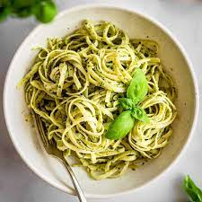

Receta pasta al pesto
Esta es la receta de como se hace una buena pasta al Pesto !!
Ingrediente
- 300g de pasta
- Aceite de oliva virgen extra
- Sal
- Pimienta
Para el pesto
- ramita de albahaca fresca
- 50g de queso Parmesano
- 50g de piñones
- 2 dientes de ajo
- 80 ml de Aceite virgen extra
- Sal
Elaboración
- Tuesta ligeramente los piñones en el horno a 180 ºC durante 10 minutos.
- Para la salsa pesto: pela los dientes de ajo. Lava las hojas albahaca y sécalas bien. Tritura las hojas de albahaca con los dientes de ajo, los piñones y el Parmesano. Añade poco a poco el aceite de oliva virgen extra hasta que la salsa quede con una textura granulosa. Rectifica de sal y reserva.
- Cuece la pasta en una cazuela con agua hirviendo y sal el tiempo indicado por el fabricante.
- Escúrrela cuando esté al dente y sírvela con la salsa pesto, ya sea mezclada o por encima.
